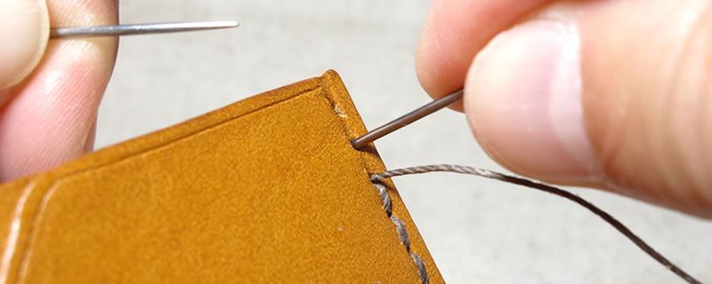
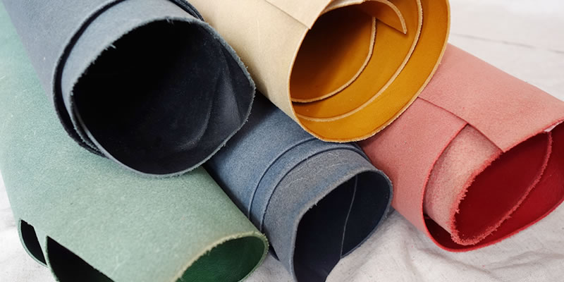
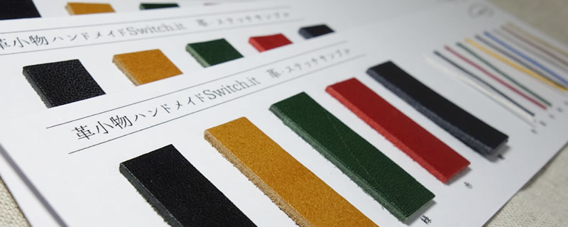
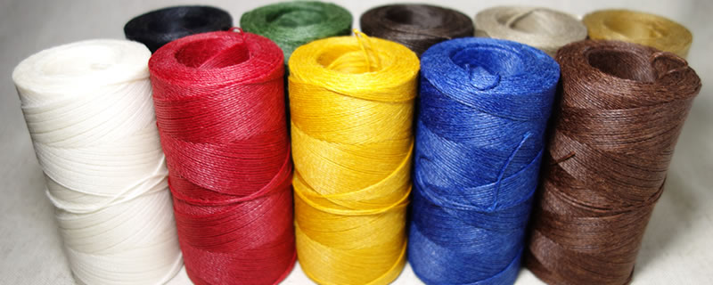

工房について
天然の革と麻糸だけを使い、
一針ずつ手で縫い上げる。
それが、この工房のすべてです。
革小物ハンドメイド Switch-it[スイッチ・イット]は、北海道の小さな工房です。機械を使わず、道具と手だけで仕立てています。ここでは、その仕事の中身をご紹介します。



なぜ、手で縫うのか
丈夫で、直せる
手縫いは、1本の糸を2本の針で交互に通していきます。1か所が切れても、そこから連鎖してほどけることがありません。機械縫いのように一気にほつれる心配がなく、万一傷んでも、その部分だけを縫い直せます。
永く使っていただくための、いちばん確かな方法だと考えています。
手縫いにしかできない形
Switch-itの作品には、駒合わせ縫いという技法を用いたものが多くあります。2枚の革を垂直に配置し、革の切断面に糸を通して縫い合わせる技法です。
機械では容易に行えないこの技法によって、底面が固定され自立する円筒型キーケースや、マチが箱状に保たれる名刺入れといった、ほかではあまり見ない形が生まれています。
ひとつの作品ができるまで
ご注文をいただいてから、一点ずつこの手順で仕立てています。
-
01
革を裁つ
植物タンニンでなめした本革を、型紙に合わせて裁断します。天然の革には個体差があり、傷やしわ、色むらの出方も一枚ずつ異なります。部位ごとの硬さや伸びを見ながら、作品のどこに使うかを決めていきます。
-
02
床面を整える
革の裏側(床面)は、そのままだと毛羽立っています。ここに床面・コバ仕上げ剤を塗って磨き、なめらかに整えます。
毛羽立ちを抑えることで、手に触れたときの心地よさが増し、汚れもつきにくくなります。目には見えにくい工程ですが、永くお使いいただくための大切な下ごしらえです。
-
03
縫い穴をあける
菱目打ちという道具を革に当て、木槌で叩いて穴をあけます。手縫いは、あらかじめ穴がなければ針が通りません。
縫い合わせる革どうしで穴の数を揃え、位置も先に決めておきます。ここで狂うと、最後まで響きます。地味ですが、仕上がりを左右する工程です。
-
04
麻糸で縫う
糸には麻糸(ラミー)を使います。化学繊維を使わないのは、革と同じく天然素材で仕立てたいからです。
縫いながら糸を締める強さを一定に保つことが、美しい縫い目をつくります。強すぎれば革が歪み、弱ければ緩む。ここは道具ではなく、手の感覚がすべてです。
-
05
コバを磨く
コバとは革の切断面のことです。切りっぱなしのままでは毛羽立ち、傷みも早くなります。
床面・コバ仕上げ剤を塗り、艶が出るまで磨き上げます。使っている革は染料が芯まで通っているため、磨くほどに断面まで美しく仕上がります。目立たない部分ですが、ここの丁寧さが作品の印象を決めます。
使っている素材
革と糸には、天然素材だけを選んでいます。仕上げの工程では、永くきれいにお使いいただけるよう、専用の仕上げ剤も用いています。

革 ／ 植物タンニンレザー
植物から採れるタンニンでなめした本革です。化学薬品でなめした革に比べて時間も手間もかかりますが、使い込むほどに色が深まり、艶が出ます。
傷やしわ、色むらが目立ちやすい素材でもあります。それは天然の革である証でもあり、同じものが二つとない理由でもあります。黒・キャメル・緑・赤・紺の5色をご用意しています。

糸 ／ 麻糸(ラミー)
植物繊維の麻糸を使っています。革になじみ、時間が経つほどに落ち着いた風合いになります。
白・黒・赤・緑・黄・焦茶・青・グレー・茶・カーキの10色から、革の色に合わせてお選びいただけます。同じ形でも、糸の色ひとつで印象が大きく変わります。
受注生産について
ご注文をいただいてから作ります
革5色と糸10色、50通りの組み合わせから選んでいただき、そこから制作を始めます。在庫を並べて売るのではなく、お一人ずつのためにお作りする形をとっています。
製作期間は、ご入金の確認から約1週間をいただいています。
なお、一から形を起こすフルオーダーはお受けしておりません。ただ、既存の作品をもとにした小さな調整であれば、内容によってはご相談に応じられる場合もあります。気になることがあれば、お気軽にお尋ねください。
色見本を無料でお送りします
画面上の色と実物では、どうしても見え方が変わります。ご購入前に、革と糸の実物サンプルを無料でお送りしていますので、手にとってお確かめください。
ご希望の方は、各ストアの「質問する」機能か、お問い合わせページからお申しつけください。